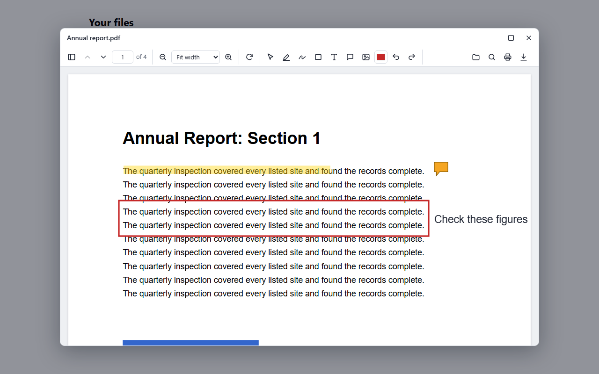
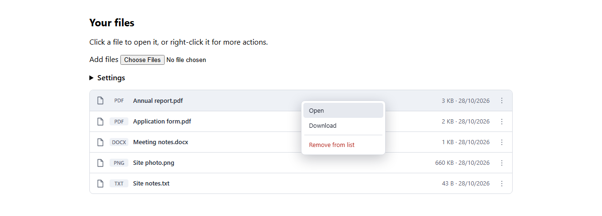
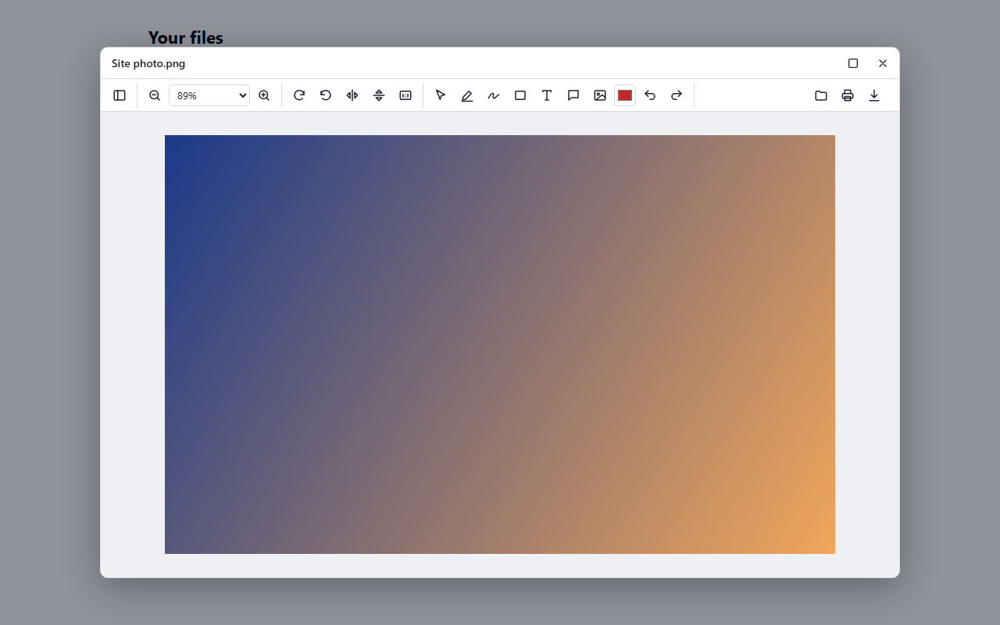
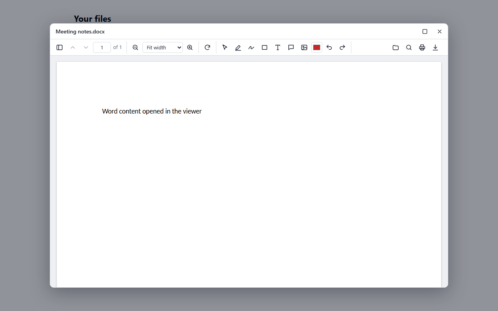
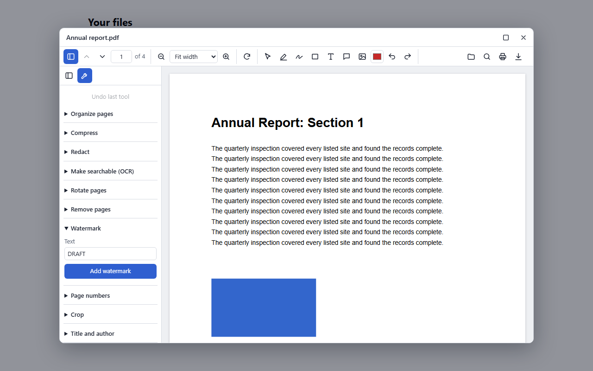
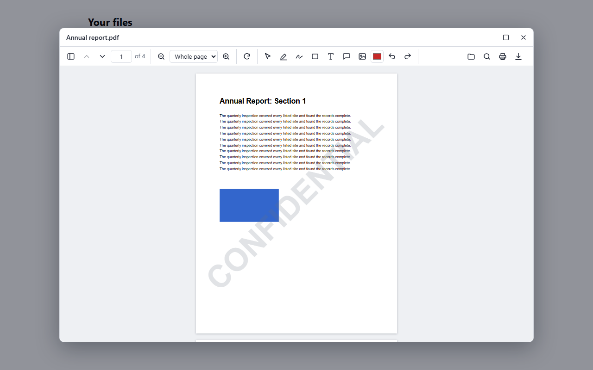
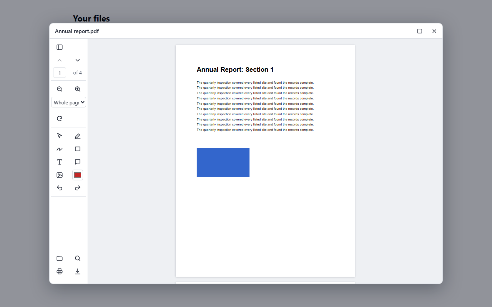
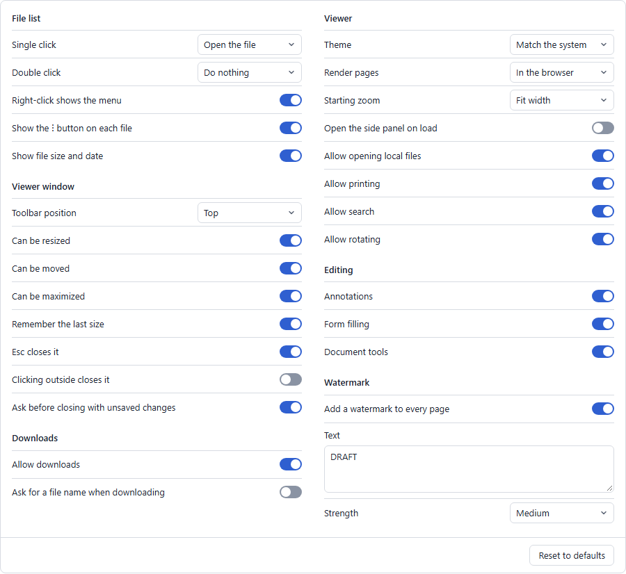

PDFs in your app, on your terms.
An open-source PDF and image viewer and editor for React, Vue and Angular, a REST API for converting and editing documents, and an MCP server for AI clients. All of it runs on your own infrastructure.
Free · MIT licensed · No account or per-seat fees
Works with React, Vue, Angular and plain JavaScript
Add a file list and viewer to a React app
import { FileList } from '@pdf-suite/react';
import { createEditorPlugin } from '@pdf-suite/editor';
const files = [
{ id: '1', name: 'report.pdf', source: '/report.pdf' },
{ id: '2', name: 'photo.png', source: '/photo.png' },
];
const viewer = { plugins: [createEditorPlugin()] };
export function App() {
return <FileList files={files} viewer={viewer} />;
}That's the whole integration: click a file, and it opens in a window people can move, resize and annotate in.
The real viewer, right here.
This isn't a video. Click a file to open it, draw on it, leave a comment and download the result. You can add your own PDFs and images too.
Word, Excel and PowerPoint files and the document tools need the API, which this page doesn't run. Run it yourself to try those in a couple of minutes.
Everything people expect, inside your app.
Your users stay in your product. Zoom, thumbnails, search and printing are built in, and the optional editor adds highlights, drawing, text, comments, signatures and form filling, all saved into the PDF.







Three steps, no build tricks.
Install the packages, render the component, and you're done. PDFs and images work straight away with no server. The steps below are the same ones we test in new apps.
Install the packages.
npm install https://github.com/kartik-ramachandran/PDFSuite/releases/download/v0.1.0/pdf-suite-viewer-0.1.0.tgz https://github.com/kartik-ramachandran/PDFSuite/releases/download/v0.1.0/pdf-suite-editor-0.1.0.tgz https://github.com/kartik-ramachandran/PDFSuite/releases/download/v0.1.0/pdf-suite-react-0.1.0.tgzRender your files.
import { createEditorPlugin } from '@pdf-suite/editor'; import { FileList, type FileItem } from '@pdf-suite/react'; const files: FileItem[] = [ { id: 'report', name: 'report.pdf', source: '/report.pdf' }, { id: 'photo', name: 'photo.png', source: '/photo.png' }, ]; // Keep this outside the component, so it isn't rebuilt on every render. const viewer = { plugins: [createEditorPlugin()] }; export function App() { return <FileList files={files} viewer={viewer} />; }Optional: add the API for Office files and document tools. See connecting the API.
Install the packages.
npm install https://github.com/kartik-ramachandran/PDFSuite/releases/download/v0.1.0/pdf-suite-viewer-0.1.0.tgz https://github.com/kartik-ramachandran/PDFSuite/releases/download/v0.1.0/pdf-suite-editor-0.1.0.tgz https://github.com/kartik-ramachandran/PDFSuite/releases/download/v0.1.0/pdf-suite-vue-0.1.0.tgzRender your files.
<script setup lang="ts"> import { createEditorPlugin } from '@pdf-suite/editor'; import { FileList } from '@pdf-suite/vue'; import { markRaw } from 'vue'; const files = [ { id: 'report', name: 'report.pdf', source: '/report.pdf' }, { id: 'photo', name: 'photo.png', source: '/photo.png' }, ]; // markRaw stops Vue from wrapping the plugin in a reactive proxy. const options = markRaw({ viewer: { plugins: [createEditorPlugin()] } }); </script> <template> <FileList :files="files" :options="options" /> </template>Optional: add the API for Office files and document tools. See connecting the API.
Install the packages.
npm install https://github.com/kartik-ramachandran/PDFSuite/releases/download/v0.1.0/pdf-suite-viewer-0.1.0.tgz https://github.com/kartik-ramachandran/PDFSuite/releases/download/v0.1.0/pdf-suite-editor-0.1.0.tgz https://github.com/kartik-ramachandran/PDFSuite/releases/download/v0.1.0/pdf-suite-angular-0.1.0.tgzRender your files.
import { Component } from '@angular/core'; import { createEditorPlugin } from '@pdf-suite/editor'; import { FileListComponent, type FileItem } from '@pdf-suite/angular'; @Component({ selector: 'app-root', imports: [FileListComponent], template: '<pdf-suite-file-list [files]="files" [options]="options" />', }) export class AppComponent { readonly files: FileItem[] = [ { id: 'report', name: 'report.pdf', source: '/report.pdf' }, { id: 'photo', name: 'photo.png', source: '/photo.png' }, ]; readonly options = { viewer: { plugins: [createEditorPlugin()] } }; }Optional: add the API for Office files and document tools. See connecting the API.
Install the packages.
npm install https://github.com/kartik-ramachandran/PDFSuite/releases/download/v0.1.0/pdf-suite-viewer-0.1.0.tgz https://github.com/kartik-ramachandran/PDFSuite/releases/download/v0.1.0/pdf-suite-editor-0.1.0.tgzRender your files, with any bundler.
import { createFileList } from '@pdf-suite/viewer'; import { createEditorPlugin } from '@pdf-suite/editor'; createFileList(document.getElementById('files'), { files: [ { id: 'report', name: 'report.pdf', source: '/report.pdf' }, { id: 'photo', name: 'photo.png', source: '/photo.png' }, ], viewer: { plugins: [createEditorPlugin()] }, });Optional: add the API for Office files and document tools. See connecting the API.
Connecting the API
Start the API, then tell the viewer where it is. This adds Office files and the document tools.
# In a clone of this repository
docker compose up -d --buildconst viewer = {
serviceUrl: 'http://localhost:8080',
plugins: [createEditorPlugin()],
};Files behind a login
Pass headers with a URL, or fetch the file only when someone opens it.
{ id: '1', name: 'a.pdf', source: {
url: '/secure/a.pdf',
headers: { Authorization: `Bearer ${token}` },
} }
{ id: '2', name: 'b.pdf', source: () => getFileUrl('2') }One place to change how it behaves.
What a click does, where the toolbar sits, whether downloads are allowed, the watermark: all of it is a setting. Set them in code, give people a ready-made screen, and keep the choices in the browser or on your server.

For your whole app
import { configureViewer } from '@pdf-suite/react';
configureViewer({
clickAction: 'menu',
toolbarPosition: 'left',
allowRename: true,
});Saved on your server
Each app, team or user can have their own, and they follow people between browsers.
import { loadViewerSettings } from '@pdf-suite/react';
await loadViewerSettings({
serviceUrl: 'https://pdf.example.com',
scope: 'team-a',
});Document work, without a third party.
More than 40 routes, which you can call with file uploads or base64 inside JSON. Your documents stay on your servers.
Convert
Between PDF and Word, Excel, PowerPoint, HTML, Markdown, text and images. PDF to Office gives editable documents, not pictures of pages.
Edit
Merge, split, organize, rotate, crop, compress, watermark, and add page numbers or image stamps.
Read
OCR for scanned pages, searchable PDFs, document structure as JSON, and text and visual comparison.
Protect
Permanent redaction, passwords and metadata removal.
Forms
List and fill PDF form fields, and optionally flatten them.
Your language
It's plain HTTP, and the README has examples for curl, PowerShell, C#, Python and JavaScript.
curl -o report.pdf -F "files=@report.docx" http://localhost:8080/api/pdf/word-to-pdfDocument tools that don't waste tokens.
The MCP server gives AI clients six tools. Files stay in a workspace folder and are referred to by name, so documents never pass through the model, and results come back as short summaries.
{
"mcpServers": {
"pdf": {
"command": "docker",
"args": ["run", "-i", "--rm",
"-v", "/path/to/your/documents:/workspace",
"-e", "Mcp__WorkspaceRoot=/workspace",
"pdf-service", "--mcp-stdio"]
}
}
}- Inspect and read: page counts and text, with OCR on scanned pages
- Convert and create: to and from Office files, images and more
- Edit: compress, split, redact, watermark and others, in one tool
- Compare: a summary of changes, with the full report saved as a file
Build the image first with docker build -t pdf-service backend. Read the MCP guide →
What it needs, plainly.
This is an early release, at version 0.1.0. Here's what works without a server, and what to take care of before going to production.
| You want | In the browser only | With the API |
|---|---|---|
| View, search and print PDFs and images | Yes | Yes |
| Annotate, sign and fill in forms | Yes | Yes |
| Open Word, Excel, PowerPoint, HTML, Markdown and text files | No | Yes |
| Document tools such as compress, OCR, redact and convert | No | Yes |
| Render pages on your server | No | Yes |
| Save settings on your server | No | Yes |
- Protect the API. It has no login or rate limits, so put it behind your own gateway. Read the security notes before deploying it.
- Viewer settings aren't security controls. Turning off downloads or adding a watermark happens in the browser. To guarantee a watermark, add it on your server with the API.
- Packages install from GitHub for now, as they aren't on npm yet.